Javascript Testing
Introduction
Javascript testing is the process of verifying javascript code works as expected through automated test cases.
It ensures code quality and helps identify bugs early in the development process.
Types of Javascript testing- Unit Testing: Testing individual functions or components in isolation.
- Integration Testing: Testing how different modules or services work together.
- End-to-End (E2E) Testing: Simulating real user scenarios to test the entire application flow.
- Functional Testing: Verifying that specific features work according to requirements.
- Performance Testing: Assessing the speed and responsiveness of the application under load.
- Regression Testing: Ensuring that new code changes do not adversely affect existing functionality.
Popular Javascript testing frameworks and libraries include Jest, Mocha, Jasmine, Cypress, and Puppeteer.
These tools provide features for writing, executing, and reporting on tests, making it easier for developers to maintain high-quality codebases.
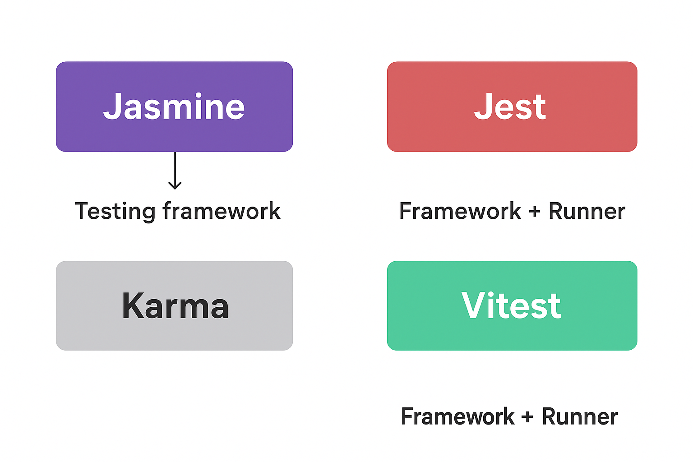 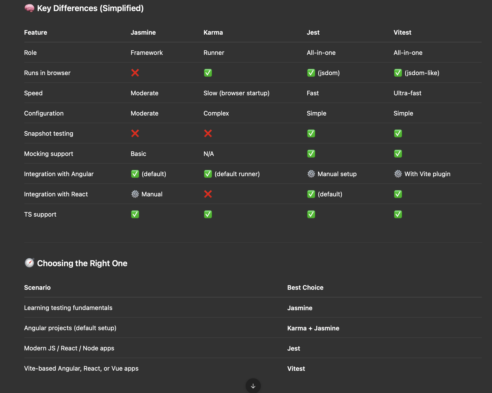Reference
- Youtube Learn More
- Youtube Learn More
Javascript Testing Basics with Jest example (NodeJs App)
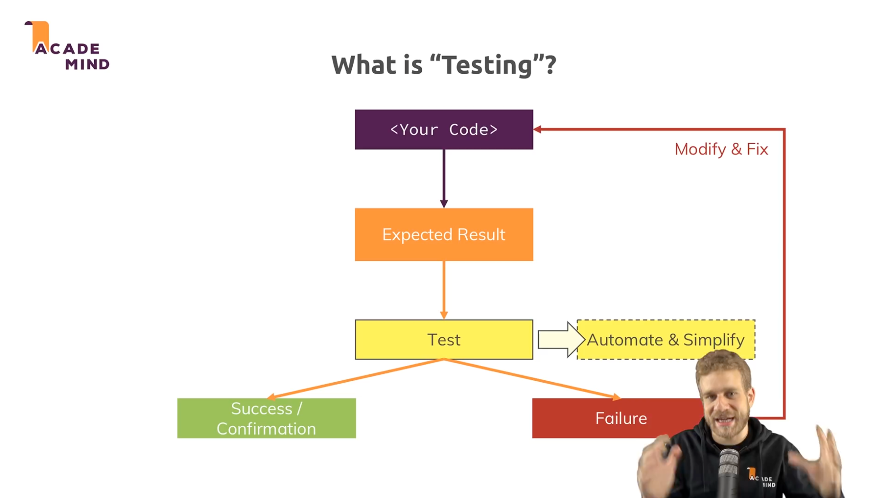
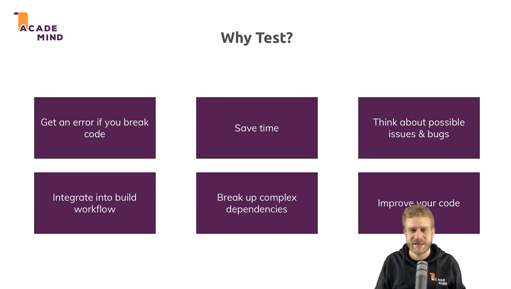
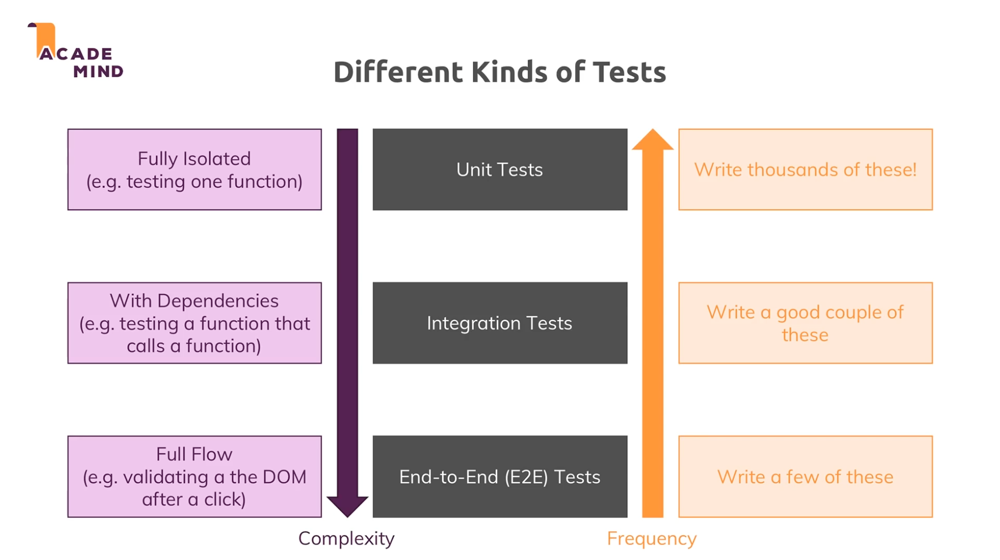
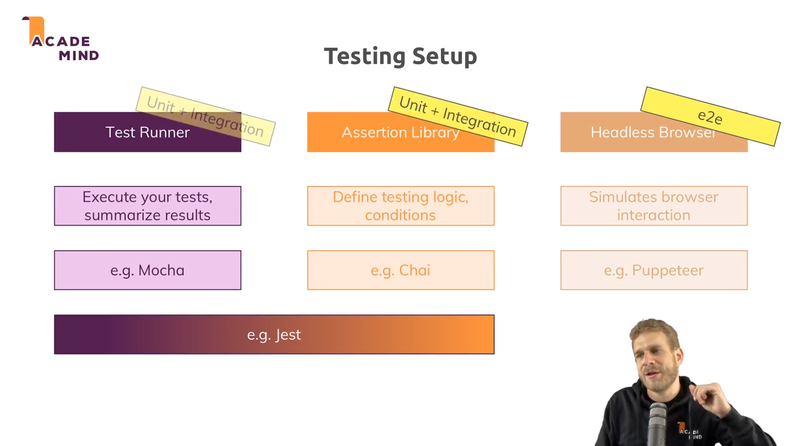
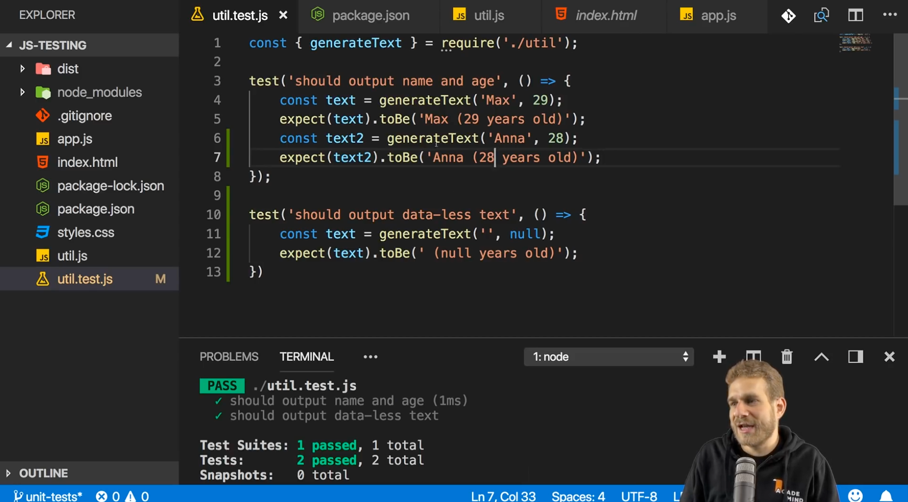

 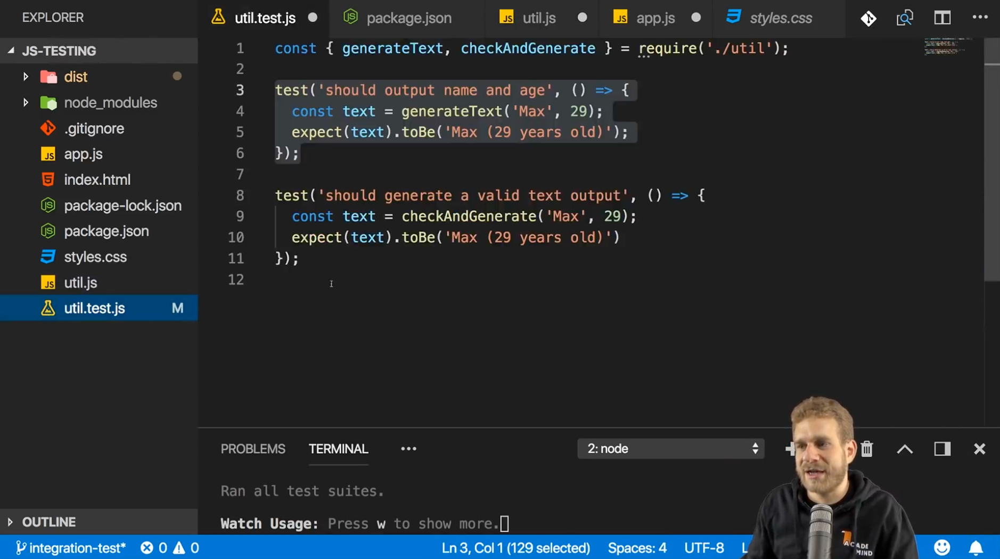
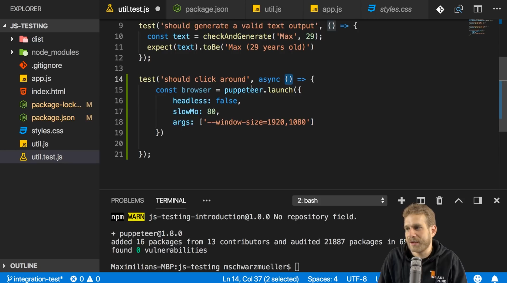
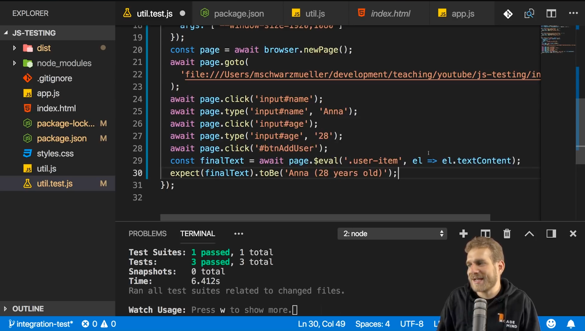
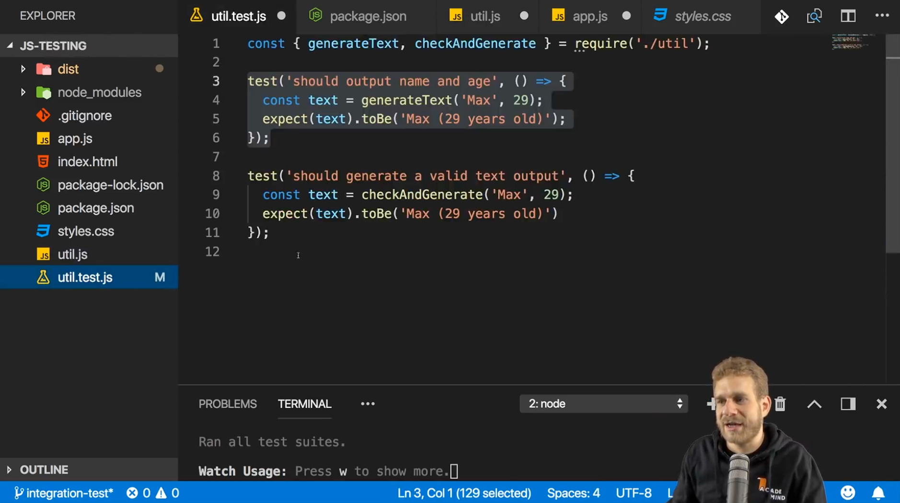
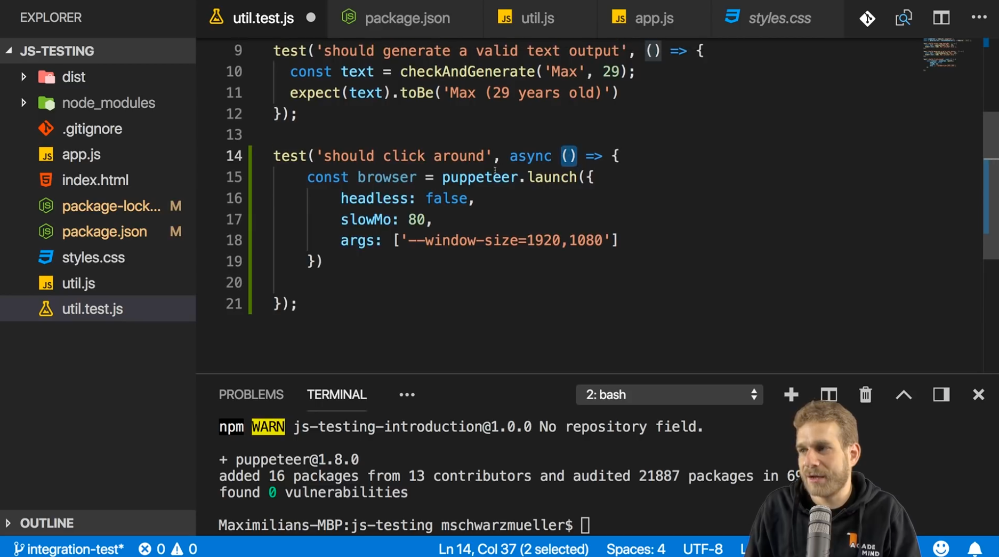
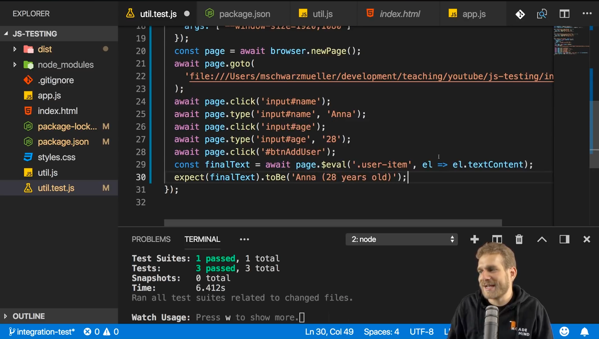
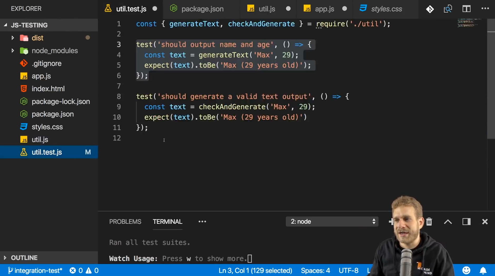
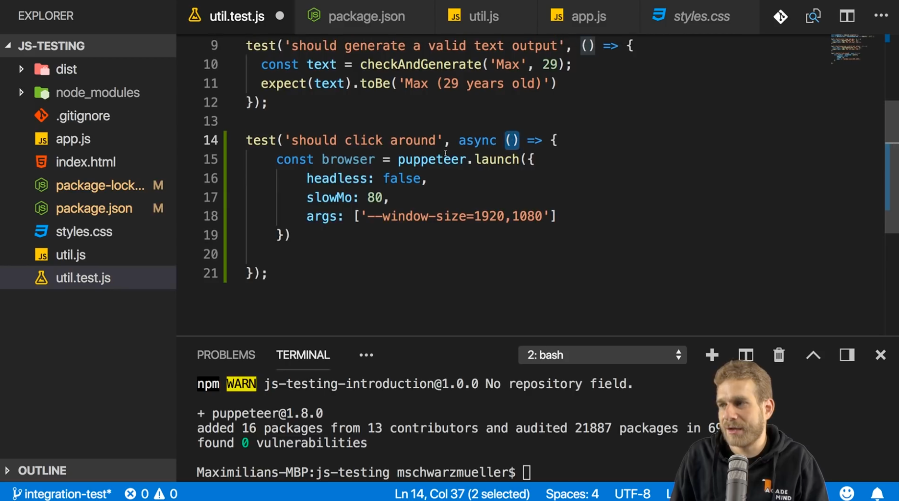
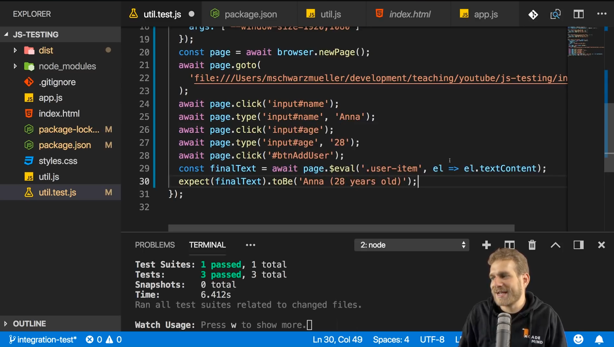